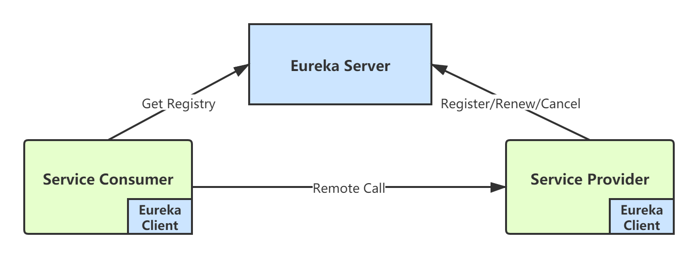
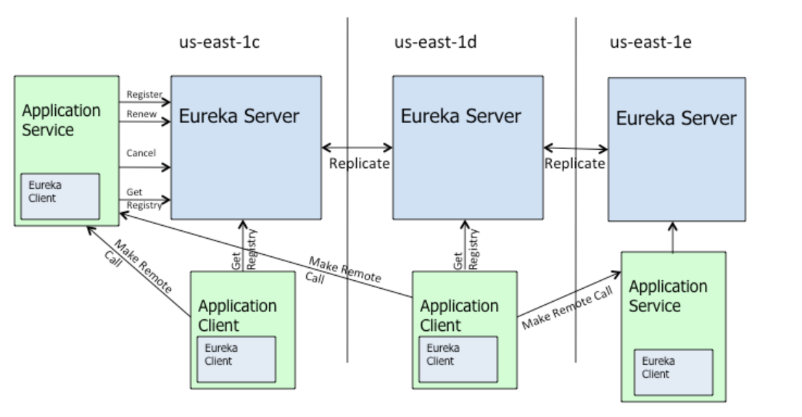
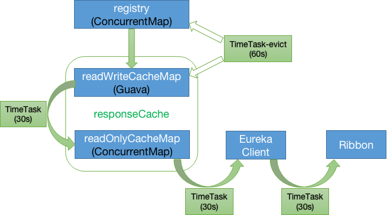

关于Eureka的基本原理，我其实已经在《分布式系统从理论到实战系列》中系统讲解过了。本章我们先来回顾一下，然后我将实现一个基于Eureka的demo，方便新手童鞋学习一下Eureka怎么使用，之后就会开始讲解Eureka的源码。
Eureka从整体上可以分为两个主体：Eureka Server 和 Eureka Client。

Eureka Client和Eureka Server之间的主要交互，可以参考下面这张官方的图：

上图中：
us-east-1x：表示集群所在区域（zone），可以理解成数据中心（这玩意儿主要是AWS的东西，实际上并不常用）；
Eureka Server：表示注册中心， 通过 REST 协议暴露服务（内嵌Eureka Client）；
我们来一一看下各个组件和以及它们之间的交互情况。
Eureka Server（注册中心）， 主要对外提供三项功能：
服务注册
服务提供者（Provider）启动时，会通过内嵌的Eureka Client 向 Eureka Server 注册自身服务实例信息，Eureka Server 会存储该服务实例的信息，Eureka Server 内部有多级缓存机制来维护服务注册表。
服务发现
服务消费者（Consumer）通过内嵌的Eureka Client，从 Eureka Server 拉取最新的注册表，并缓存在自己本地。
状态同步
Eureka Client 通过心跳（租约）机制和 Eureka Server 同步当前客户端的状态。
Eureka Client（注册中心客户端），向注册中心注册/发现服务的应用都可以叫做Eureka Client（包括Eureka Server本身，因为Eureka集群部署时，每个Eureka Server作为集群中其它Eureka Server的客户端进行集群信息同步）。Eureka Client 可以从Eureka Server获取注册表，缓存在本地，从中查找服务提供者，从而进行远程调用。
服务注册表定期（每30秒钟）更新一次。每次返回注册列表信息可能与 Eureka Client 的缓存信息不同，Eureka Client 会自动处理。
Eureka Client 和 Eureka Server 可以使用 HTTP JSON/XML 格式进行通讯。在默认情况下 Eureka Client 使用压缩 JSON 格式来获取注册列表的信息。
服务提供者，会将自身的应用实例信息注册到 Eureka Server ，服务提供者也是一个 Eureka Client。当 Eureka Client 向 Eureka Server 注册时，它提供自身的元数据，包括 IP 地址、端口，运行状况等。
Eureka Client 默认每隔 30 秒 向 Eureka Server发送一次心跳（续租），通过续租来告知 Eureka Server 该 Eureka Client 运行正常，没有出现问题。
可以通过以下参数配置心跳时间：
心跳间隔时间：eureka.instance.lease-renewal-interval-in-seconds = 30
Eureka Client 在程序关闭时会向 Eureka Server 发送取消（Cancel）请求。 Eureka Server 接收到请求后，会将该服务从注册表中删除。
默认情况下，Eureka Server 每隔60s会检查一次注册表，如果有 Eureka Client 超过 90s还没续约，就将该服务从其注册表中剔除（Eviction）。
可以通过以下参数配置服务失效剔除时间：
服务失效剔除时间：eureka.instance.lease-expiration-duration-in-seconds = 90，因为Eureka这里有个bug，所以实际是180秒。
Eureka自我保护机制是为了防止误杀服务而提供的一种机制。默认情况下，如果 Eureka Server 会将租约过期的应用实例剔除。
但是在分布式系统中，服务之间的网络通信往往会面临着各种问题，比如网络分区故障，此时服务仍然可能是正常的，如果Eureka将其剔除，会造成误杀。
所以，Eureka-Server会在内存里统计最近一分钟内实际收到的心跳次数，如果这个心跳次数小于某个期望最小值，那么就会它就会认为是网络出现了故障，从而导致client无法发送心跳。这个时候 Eureka Server 就会启动保护机制，不会再接受服务剔除请求。
通过在 Eureka Server 配置如下参数，开启或者关闭保护机制：
eureka.server.enable-self-preservation = true。自我保护机制这个功能存在较多问题，生产上不建议打开。
Eureka Server 进入自我保护机制后，会做以下事情：
注意，如果在保护期内刚好某个服务提供者下线了，此时服务消费者就会拿到一个无效的服务实例，会调用失败。对于这个问题，服务消费者要有一些容错机制，如重试、降级等。
Eureka Server采用一种多级缓存机制来保存服务注册表，如下图：

Eureka Server 的服务注册表保存在内存中，整个数据存储分为两层：数据存储层和缓存层。
| 缓存 | 类型 | 说明 |
|---|---|---|
| registry | ConcurrentHashMap | register/renew/cancel操作时会实时更新。key是spring.application.name，value也是一个ConcurrentHashMap。 |
| readWriteCacheMap（LEVEL2） | Guava Cache | 从register实时更新，包含定时失效机制（默认180秒），保存服务信息的对外输出数据结构。 |
| readOnlyCacheMap(LEVEL1) | ConcurrentHashMap | 从LEVEL2周期更新，Eureka client默认从这里获取服务注册信息。 |
当Eureka Client进行register、renew、cancel操作时，registry会实时更新。registry中保存着原始的服务信息，本质是一个ConcurrentHashMap。
readWriteCacheMap中保存的是加工后的服务注册表。
registry更新后，会实时将readWriteCacheMap清空，同时，Eureka-Server端每隔60s会清理超过180s未续约的服务，此时也会将readWriteCacheMap清空。
另外，每隔30s，Eureka Server会将readWriteCacheMap中的信息同步至readOnlyCacheMap(Level1)；
当Eureka Client发送getRegistry请求拉取服务注册信息时，实际是从readOnlyCacheMap这个一级缓存中获取的。如果获取不到，会触发二级缓存readWtireCacheMap的load机制：从registry中获取原始服务信息后进行处理加工，再加载到二级缓存readWtireCacheMap中。
Eureka的这种多级缓存数据结构，最大的好处是提升了性能，同时能减少并发访问服务注册表时的冲突。因为如果只有一个服务注册表，同时读写必然涉及加锁，在服务很多的情况下，会导致性能低下。
默认配置下，Eureka的数据时效性是比较差的，服务发现、服务注册的感知可能要几十秒甚至几分钟。数据时效差，主要是因为默认的几个定时任务同步都是30s：
我们可以对以下参数进行优化：
eureka.server.responseCacheUpdateIntervalMs = 3000eureka.client.registryFetchIntervalSeconds = 3eureka.client.leaseRenewalIntervalInSeconds = 30eureka.server.evictionIntervalTimerInMs = 6000eureka.instance.leaseExpirationDurationInSeconds = 6经过上述参数优化后，数据的时效性一般可以达到秒级。
Eureka本身为了实现高可用，支持集群部署。 我们假设有三台 Eureka Server 组成的集群，第一台 Eureka Server 在us-east-1c机房，另外两台 Eureka Server 分别部署在us-east-1d和us-east-1e机房。
这样三台 Eureka Server 就组建成了一个跨区域集群，三个地方的任意一个机房出现问题，都不会影响整个集群的可用性。
从上图可以看出， Eureka Server 集群之间通过 Replicate 来同步数据，所有节点都是对等的。在这种架构下，节点通过互相注册来提高可用性，每个节点需要添加一个或多个有效的 serviceUrl 指向其他节点。
如果某台 Eureka Server 宕机了，Eureka Client 的请求会自动切换到新的 Eureka Server 节点。当宕机服务器恢复后，Eureka 会再次将其纳入到服务器集群管理之中。
Eureka Server 的同步遵循着一个非常简单的原则：只要有一条边将节点连接，就可以进行信息传播与同步。所以，如果存在多个节点，只需要将节点之间两两连接起来形成通路，那么其它注册中心都可以共享信息。
每个 Eureka Server 同时也是 Eureka Client，多个 Eureka Server 之间通过 P2P 方式完成服务注册表的同步。当 Eureka Client 在向某个 Eureka 注册时，如果发现连接失败，则会自动切换至其它节点，只要有一台 Eureka Server 还在，就能保证整个集群的可用性，但是由于Eureka Server 集群之间的状态同步是异步方式的，所以不保证节点间的状态是强一致的，只能保证最终一致性。
Eureka 提供了 Region 和 Zone 两个概念来进行分区，这两个概念均来自于亚马逊的 AWS，所以国内实际并不常用。
Region：可以理解为地理级的区域划分，比如亚洲地区，中国区或者深圳等等。没有具体大小的限制，可根据项目具体的情况，自行合理划分 region。
Zone：可以理解为 Region 内的具体机房，比如说 Region 划分为深圳，然后深圳有两个机房，就可以在此 Region 之下划分出 zone1、zone2。
上图中的 us-east-1c、us-east-1d、us-east-1e 就代表了不同的 Zone。Zone 内的 Eureka Client 优先和 Zone 内的 Eureka Server 进行心跳同步，同样调用端优先从 Zone 内的 Eureka Server 获取服务列表，当 Zone 内的 Eureka Server 挂掉之后，才会从别的 Zone 中获取信息。
由于Eureka 是一种数据集中集群，而且采用了P2P通信和心跳机制，所以Eureka集群很难支撑大规模的服务实例。每个Eureka Server都要接受大量心跳请求，同时还要与其它Eureka Server进行P2P通信，服务实例太多后对集群的压力会非常大。
所以，生产环境对注册中心的机器配置要求一般会比较高，16核32G的机器大概可以支撑每秒几千请求，所以两台高配机器，一般能支撑上千个服务实例。
但是，如果服务实例的规模达到万级，那么纯粹的Eureka集群部署基本是无能为力的，需要对其进行自研改造，其实可以参考Redis集群模式的架构设计。
我这里介绍下改造的几个思路：
数据分片
改造的第一步就是数据的分片存储，也就是采用是采用数据分散集群的架构：每个服务注册中心只存储部分注册表数据，各个注册中心节点之间不再采用P2P方式进行全量的服务注册信息同步。
主从架构
为了保证服务节点的高可用，采用主从结构，每个分片都有自己的副本，client只向Master节点注册信息和心跳同步，Slave节点作为Master的备份。当client需要拉取注册表信息时，仅仅从对应的注册中心拉取局部注册表，当涉及多个不同注册中心时，可以按需在本地进行合并。
本章，我介绍了Eureka的架构、自我保护机制以及多级缓存原理，并结合生产经验给出了一些优化建议，最后我们来回顾下Eureka的整个工作流程：
Eureka Server 启动成功后，等待服务提供者注册，在启动过程中如果配置了集群，集群之间会定时通过 Replicate 同步注册表，每个 Eureka Server 都有独立完整的服务注册表；
Eureka Client 启动后，会根据配置的 Eureka Server 地址，去注册自己的服务；
Eureka Client 默认每 30s 向 Eureka Server 发送一次心跳请求，证明客户端服务正常；
Eureka Server 每隔60s会检查一次注册表，如果有 Eureka Client 超过 90 *2 s还没续约，会认为该节点失效，会注销该实例；
如果单位时间内 Eureka Server 统计到有大量的 Eureka Client 没有上送心跳，则认为可能出现网络异常，采取自我保护机制，不再剔除没有上送心跳的客户端；
当 Eureka Client 心跳请求恢复正常之后，Eureka Server 自动退出自我保护模式；
Eureka Client 会定时从注册中心获取服务注册表，并更新到本地缓存中；
服务调用时，Eureka Client 优先从本地缓存中获取需要调用的服务。如果获取不到，则从Eureka Server重新获取注册表，更新到本地缓存；
Eureka Client 程序关闭时，会向 Eureka Server 发送cancel请求，Eureka Server 接收到请求后将该实例从注册表中删除。
下一章，我将编写一个Spring Boot的demo应用，讲解Eureka的基本使用。